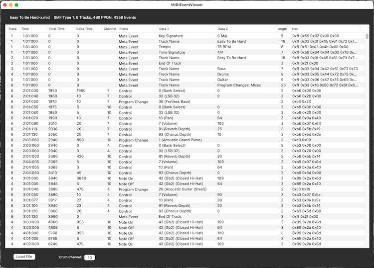

|
|
MIDIEventViewer Help |
Usage

Open MIDIEventViewer and use the Load File button to load a Standard MIDI File (SMF). SMFs can also be dragged and dropped onto MIDIEventViewer.
The text above the table header displays the file name, SMF type, number of tracks, the Pulses Per Quarter Note (PPQN), and the number of events for the loaded file. A PPQN of 96 means a quarter note is 96 "ticks" long, an eighth note is 48 "ticks", etc. Type 0 SMFs contain a single multi-channel track; Type 1 SMFs contain one or more simultaneous tracks; Type 2 SMFs contain one or more sequentially independent single-track patterns (not currently supported by MIDIEventViewer).
Time information in a SMF is stored either as the number of delta time "ticks" that make up a quarter note, or as the number of "ticks" per frame for SMPTE or MIDI Time Code formats. MIDIEventViewer currently supports only the "ticks" per quarter note time representation. Time information for each event is displayed in three ways: 1) Time: mm:bb:ttt - where mm is measures, bb is beats, and ttt is "ticks"; 2) Total Time: the number of "ticks" since the beginning of the track; and, 3) Delta Time: the number of "ticks" since the previous event. SMPTE meta events are displayed when found in the SMF, but are not used for the time information displayed for each event.
Note: Although MIDIEventViewer will display all time signature change events, the measure/beat/"ticks" time always assumes a time signature of 4/4.
Note names assume middle C is C4 (note number 60). Note Off events are shown when encountered to observe the release velocity transmitted by some MIDI controllers. Note that a Note On Event with a velocity of 0 is treated as a Note Off event.
If notes are found on the selected Drum Channel, the General MIDI (GM) drum note names are displayed in parentheses. Setting Drum Channel to 0 will disable drum note name display. Drum Channel must be set before loading a file.
Program Change events display both the program change number and the GM patch name in parentheses. Program changes will be in the range 1 - 128.
Control events display the control number and the control name in parentheses (if defined in the MIDI specification).
The following meta events are not currently supported: MIDI Channel Prefix. If these are encountered in a SMF, the event type will be "Unknown".